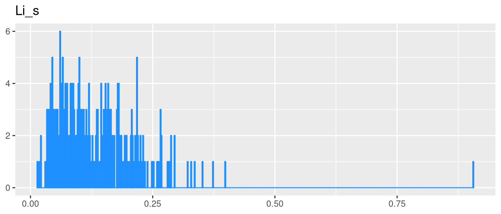
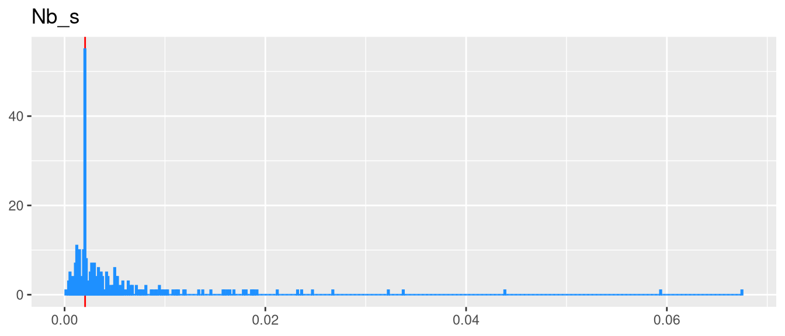

Terni
PM10
| n | mean | sd | median | trimmed | mad | min | max | range | skew | kurtosis | se |
|---|---|---|---|---|---|---|---|---|---|---|---|
| 276 | 32.88 | 15.2 | 29.32 | 30.93 | 13.65 | 10.36 | 96.01 | 85.64 | 1.134 | 0.931 | 0.9152 |
Moda: NA
LOD: 5
Al_i
| n | mean | sd | median | trimmed | mad | min | max | range | skew | kurtosis | se |
|---|---|---|---|---|---|---|---|---|---|---|---|
| 276 | 203.2 | 122 | 170.7 | 183.7 | 74.75 | 35.06 | 1114 | 1079 | 3.028 | 14.87 | 7.346 |
Moda: NA
LOD: 5.946253
Al_s
| n | mean | sd | median | trimmed | mad | min | max | range | skew | kurtosis | se |
|---|---|---|---|---|---|---|---|---|---|---|---|
| 276 | 8.78 | 7.05 | 7.197 | 7.823 | 4.854 | 1.056 | 66.71 | 65.66 | 3.734 | 22.81 | 0.4244 |
Moda: 1.06774 1.067787
LOD: 1.938667
As_i
| n | mean | sd | median | trimmed | mad | min | max | range | skew | kurtosis | se |
|---|---|---|---|---|---|---|---|---|---|---|---|
| 276 | 0.4375 | 0.3629 | 0.306 | 0.3972 | 0.3023 | 0.02493 | 1.912 | 1.887 | 1.172 | 1.298 | 0.02184 |
Moda: 0.2536945
LOD: 0.4659711
As_s
| n | mean | sd | median | trimmed | mad | min | max | range | skew | kurtosis | se |
|---|---|---|---|---|---|---|---|---|---|---|---|
| 276 | 0.3379 | 0.2358 | 0.2831 | 0.3114 | 0.1816 | 0.03496 | 1.481 | 1.446 | 1.562 | 3.834 | 0.01419 |
Moda: 0.03535562
LOD: 0.02780666
B_i
| n | mean | sd | median | trimmed | mad | min | max | range | skew | kurtosis | se |
|---|---|---|---|---|---|---|---|---|---|---|---|
| 276 | 3.187 | 3.772 | 2.171 | 2.555 | 1.972 | 0.1267 | 38.74 | 38.61 | 4.301 | 30.63 | 0.2271 |
Moda: 1.490709
LOD: 0.5464837
B_s
| n | mean | sd | median | trimmed | mad | min | max | range | skew | kurtosis | se |
|---|---|---|---|---|---|---|---|---|---|---|---|
| 276 | 4.615 | 3.141 | 3.998 | 4.407 | 3.292 | 0.05296 | 16.25 | 16.2 | 0.6495 | 0.1021 | 0.1891 |
Moda: 0.05296163
LOD: 1.264386
Ba_i
| n | mean | sd | median | trimmed | mad | min | max | range | skew | kurtosis | se |
|---|---|---|---|---|---|---|---|---|---|---|---|
| 276 | 11.56 | 10.06 | 10.89 | 10.06 | 6.867 | 0.3387 | 71.05 | 70.71 | 1.914 | 6.006 | 0.6053 |
Moda: 10.88595
LOD: 0.9040354
Ba_s
| n | mean | sd | median | trimmed | mad | min | max | range | skew | kurtosis | se |
|---|---|---|---|---|---|---|---|---|---|---|---|
| 276 | 5.752 | 3.713 | 4.592 | 5.245 | 2.498 | 1.048 | 24.21 | 23.16 | 1.634 | 3.605 | 0.2235 |
Moda: 4.178069
LOD: 1.0527
Bi_i
| n | mean | sd | median | trimmed | mad | min | max | range | skew | kurtosis | se |
|---|---|---|---|---|---|---|---|---|---|---|---|
| 276 | 0.2227 | 0.1852 | 0.1599 | 0.1939 | 0.1213 | 0.0008233 | 1.043 | 1.042 | 1.584 | 2.612 | 0.01115 |
Moda: 0.0008233303
LOD: 0.01316941
Bi_s
| n | mean | sd | median | trimmed | mad | min | max | range | skew | kurtosis | se |
|---|---|---|---|---|---|---|---|---|---|---|---|
| 276 | 0.01439 | 0.01247 | 0.01018 | 0.01222 | 0.009793 | 0.002618 | 0.07145 | 0.06883 | 1.574 | 2.533 | 0.0007505 |
Moda: 0.003534712
LOD: 0.006203808
Ca_i
| n | mean | sd | median | trimmed | mad | min | max | range | skew | kurtosis | se |
|---|---|---|---|---|---|---|---|---|---|---|---|
| 276 | 1079 | 691.9 | 960.4 | 987.4 | 647 | 95.82 | 4047 | 3951 | 1.375 | 2.213 | 41.65 |
Moda: 524.0175
LOD: 93.72944
Ca_s
| n | mean | sd | median | trimmed | mad | min | max | range | skew | kurtosis | se |
|---|---|---|---|---|---|---|---|---|---|---|---|
| 276 | 835.5 | 351.4 | 814.6 | 811.6 | 289.5 | 92.18 | 2976 | 2884 | 1.474 | 5.77 | 21.15 |
Moda: NA
LOD: 77.31287
Cd_i
| n | mean | sd | median | trimmed | mad | min | max | range | skew | kurtosis | se |
|---|---|---|---|---|---|---|---|---|---|---|---|
| 276 | 0.05506 | 0.05236 | 0.04387 | 0.04669 | 0.04343 | 0.00411 | 0.3356 | 0.3315 | 2.055 | 6.265 | 0.003151 |
Moda: 0.004161494
LOD: 0.002957197
Cd_s
| n | mean | sd | median | trimmed | mad | min | max | range | skew | kurtosis | se |
|---|---|---|---|---|---|---|---|---|---|---|---|
| 276 | 0.1267 | 0.1205 | 0.0702 | 0.1081 | 0.07206 | 0.002326 | 0.6731 | 0.6707 | 1.558 | 2.733 | 0.007254 |
Moda: 0.01680684 0.01680758 0.06758615
LOD: 0.00688705
Ce_i
| n | mean | sd | median | trimmed | mad | min | max | range | skew | kurtosis | se |
|---|---|---|---|---|---|---|---|---|---|---|---|
| 276 | 0.2962 | 0.1436 | 0.2596 | 0.2774 | 0.06962 | 0.1034 | 1.097 | 0.9936 | 2.162 | 6.905 | 0.008644 |
Moda: 0.1042052 0.2129858 0.2130047
LOD: 0.02082689
Ce_s
| n | mean | sd | median | trimmed | mad | min | max | range | skew | kurtosis | se |
|---|---|---|---|---|---|---|---|---|---|---|---|
| 276 | 0.01883 | 0.02144 | 0.01545 | 0.01539 | 0.01202 | 0.0007708 | 0.2262 | 0.2255 | 4.758 | 35.21 | 0.001291 |
Moda: 0.000780557
LOD: 0.01563397
Co_i
| n | mean | sd | median | trimmed | mad | min | max | range | skew | kurtosis | se |
|---|---|---|---|---|---|---|---|---|---|---|---|
| 276 | 0.2879 | 0.3368 | 0.2141 | 0.2261 | 0.1338 | 0.02443 | 2.741 | 2.716 | 4.114 | 21.64 | 0.02027 |
Moda: 0.02474102
LOD: 0.01792958
Co_s
| n | mean | sd | median | trimmed | mad | min | max | range | skew | kurtosis | se |
|---|---|---|---|---|---|---|---|---|---|---|---|
| 276 | 0.04046 | 0.0252 | 0.03664 | 0.03847 | 0.02427 | 0.005357 | 0.1662 | 0.1608 | 0.9577 | 1.805 | 0.001517 |
Moda: 0.005698953
LOD: 0.003691721
Cr_i
| n | mean | sd | median | trimmed | mad | min | max | range | skew | kurtosis | se |
|---|---|---|---|---|---|---|---|---|---|---|---|
| 276 | 33.53 | 35.11 | 23.19 | 26.43 | 13.7 | 3.081 | 319.6 | 316.5 | 4.022 | 22.4 | 2.113 |
Moda: NA
LOD: 1.912471
Cr_s
| n | mean | sd | median | trimmed | mad | min | max | range | skew | kurtosis | se |
|---|---|---|---|---|---|---|---|---|---|---|---|
| 276 | 1.857 | 1.452 | 1.491 | 1.647 | 0.8776 | 0 | 13.95 | 13.95 | 3.064 | 17.85 | 0.08741 |
Moda: NA
LOD: 0.09138804
Cs_i
| n | mean | sd | median | trimmed | mad | min | max | range | skew | kurtosis | se |
|---|---|---|---|---|---|---|---|---|---|---|---|
| 276 | 0.03135 | 0.0242 | 0.02719 | 0.02844 | 0.01346 | 0.0005305 | 0.1719 | 0.1713 | 1.509 | 4.238 | 0.001457 |
Moda: 0.0005371642
LOD: 0.001311384
Cs_s
| n | mean | sd | median | trimmed | mad | min | max | range | skew | kurtosis | se |
|---|---|---|---|---|---|---|---|---|---|---|---|
| 276 | 0.04328 | 0.03676 | 0.02743 | 0.03854 | 0.02506 | 0.00132 | 0.1835 | 0.1822 | 1.06 | 0.4163 | 0.002213 |
Moda: 0.008868393
LOD: 0.006643265
Cu_i
| n | mean | sd | median | trimmed | mad | min | max | range | skew | kurtosis | se |
|---|---|---|---|---|---|---|---|---|---|---|---|
| 276 | 9.789 | 5.547 | 8.045 | 9.025 | 4.13 | 1.584 | 29.31 | 27.73 | 1.296 | 1.48 | 0.3339 |
Moda: NA
LOD: 0.8322743
Cu_s
| n | mean | sd | median | trimmed | mad | min | max | range | skew | kurtosis | se |
|---|---|---|---|---|---|---|---|---|---|---|---|
| 276 | 2.955 | 1.922 | 2.483 | 2.67 | 1.49 | 0.2703 | 13.63 | 13.36 | 1.823 | 4.815 | 0.1157 |
Moda: NA
LOD: 0.09046794
Fe_i
| n | mean | sd | median | trimmed | mad | min | max | range | skew | kurtosis | se |
|---|---|---|---|---|---|---|---|---|---|---|---|
| 276 | 510.9 | 348.8 | 443.9 | 463.7 | 215.6 | 44.11 | 3981 | 3937 | 4.664 | 37.66 | 21 |
Moda: NA
LOD: 34.70854
Fe_s
| n | mean | sd | median | trimmed | mad | min | max | range | skew | kurtosis | se |
|---|---|---|---|---|---|---|---|---|---|---|---|
| 276 | 12.91 | 8.373 | 12.23 | 12.08 | 7.048 | 0.8149 | 52.93 | 52.11 | 1.599 | 4.459 | 0.504 |
Moda: 1.820489
LOD: 0.3002132
Ga_i
| n | mean | sd | median | trimmed | mad | min | max | range | skew | kurtosis | se |
|---|---|---|---|---|---|---|---|---|---|---|---|
| 276 | 0.08047 | 0.04701 | 0.07754 | 0.07833 | 0.0348 | 0.002099 | 0.3111 | 0.309 | 0.9458 | 2.949 | 0.00283 |
Moda: 0.002125275 0.002125463
LOD: 0.004894085
Ga_s
| n | mean | sd | median | trimmed | mad | min | max | range | skew | kurtosis | se |
|---|---|---|---|---|---|---|---|---|---|---|---|
| 276 | 0.01026 | 0.007684 | 0.009339 | 0.009309 | 0.007384 | 0.0006315 | 0.06454 | 0.06391 | 2.037 | 9.095 | 0.0004625 |
Moda: 0.001985961 0.003425028
LOD: 0.001436919
K_i
| n | mean | sd | median | trimmed | mad | min | max | range | skew | kurtosis | se |
|---|---|---|---|---|---|---|---|---|---|---|---|
| 276 | 1022 | 994 | 722.5 | 856.9 | 891.1 | 53.85 | 4712 | 4658 | 1.349 | 1.436 | 59.83 |
Moda: 66.02178
LOD: 91.79287
K_s
| n | mean | sd | median | trimmed | mad | min | max | range | skew | kurtosis | se |
|---|---|---|---|---|---|---|---|---|---|---|---|
| 276 | 360.9 | 315.6 | 189.1 | 311.3 | 139.5 | 6.907 | 1979 | 1973 | 1.483 | 2.597 | 19 |
Moda: NA
LOD: 70.3797
La_i
| n | mean | sd | median | trimmed | mad | min | max | range | skew | kurtosis | se |
|---|---|---|---|---|---|---|---|---|---|---|---|
| 276 | 0.161 | 0.08011 | 0.1528 | 0.1505 | 0.04164 | 0.05471 | 0.6574 | 0.6027 | 2.47 | 9.815 | 0.004822 |
Moda: 0.06098674
LOD: 0.01051468
La_s
| n | mean | sd | median | trimmed | mad | min | max | range | skew | kurtosis | se |
|---|---|---|---|---|---|---|---|---|---|---|---|
| 276 | 0.01076 | 0.01124 | 0.008699 | 0.008737 | 0.004916 | 0.001154 | 0.1218 | 0.1207 | 5.181 | 38.51 | 0.0006768 |
Moda: 0.003543151 0.003543465
LOD: 0.01314416
Li_i
| n | mean | sd | median | trimmed | mad | min | max | range | skew | kurtosis | se |
|---|---|---|---|---|---|---|---|---|---|---|---|
| 276 | 0.1132 | 0.06031 | 0.1014 | 0.1056 | 0.04171 | 0.004213 | 0.4324 | 0.4282 | 1.717 | 4.793 | 0.00363 |
Moda: 0.07083721 0.07902776
LOD: 0.02084175
Li_s
| n | mean | sd | median | trimmed | mad | min | max | range | skew | kurtosis | se |
|---|---|---|---|---|---|---|---|---|---|---|---|
| 276 | 0.1348 | 0.08788 | 0.1166 | 0.1254 | 0.07524 | 0.01428 | 0.9058 | 0.8915 | 2.879 | 20.12 | 0.00529 |
Moda: NA
LOD: 0.01222724

Mg_i
| n | mean | sd | median | trimmed | mad | min | max | range | skew | kurtosis | se |
|---|---|---|---|---|---|---|---|---|---|---|---|
| 276 | 58.27 | 26.82 | 52.2 | 54.92 | 19.98 | 22.66 | 181.8 | 159.2 | 1.6 | 3.613 | 1.614 |
Moda: 22.66079
LOD: 14.13556
Mg_s
| n | mean | sd | median | trimmed | mad | min | max | range | skew | kurtosis | se |
|---|---|---|---|---|---|---|---|---|---|---|---|
| 276 | 64.02 | 29.28 | 61.05 | 61.35 | 20.08 | 12.72 | 351.3 | 338.6 | 3.903 | 32.95 | 1.763 |
Moda: NA
LOD: 4.046119
Mn_i
| n | mean | sd | median | trimmed | mad | min | max | range | skew | kurtosis | se |
|---|---|---|---|---|---|---|---|---|---|---|---|
| 276 | 10.5 | 6.216 | 9.002 | 9.487 | 4.002 | 1.476 | 48.07 | 46.59 | 2.583 | 9.822 | 0.3741 |
Moda: NA
LOD: 0.2387872
Mn_s
| n | mean | sd | median | trimmed | mad | min | max | range | skew | kurtosis | se |
|---|---|---|---|---|---|---|---|---|---|---|---|
| 276 | 7.145 | 4.344 | 6.404 | 6.707 | 3.836 | 0.7291 | 46.04 | 45.31 | 3.08 | 22.34 | 0.2615 |
Moda: NA
LOD: 0.1484175
Mo_i
| n | mean | sd | median | trimmed | mad | min | max | range | skew | kurtosis | se |
|---|---|---|---|---|---|---|---|---|---|---|---|
| 276 | 4.143 | 3.981 | 2.833 | 3.472 | 2.71 | 0.2597 | 29.93 | 29.67 | 2.341 | 8.314 | 0.2397 |
Moda: 0.7526166
LOD: 0.04956555
Mo_s
| n | mean | sd | median | trimmed | mad | min | max | range | skew | kurtosis | se |
|---|---|---|---|---|---|---|---|---|---|---|---|
| 276 | 8.03 | 10.79 | 4.887 | 5.704 | 2.964 | 0.6184 | 95.65 | 95.03 | 4.292 | 23.15 | 0.6493 |
Moda: NA
LOD: 0.9349715
Na_i
| n | mean | sd | median | trimmed | mad | min | max | range | skew | kurtosis | se |
|---|---|---|---|---|---|---|---|---|---|---|---|
| 276 | 285 | 137.2 | 256.4 | 268 | 109.8 | 19.53 | 808 | 788.5 | 1.272 | 1.966 | 8.261 |
Moda: 135.7383
LOD: 97.70957
Na_s
| n | mean | sd | median | trimmed | mad | min | max | range | skew | kurtosis | se |
|---|---|---|---|---|---|---|---|---|---|---|---|
| 276 | 371.8 | 167.2 | 353.6 | 360.1 | 117.8 | 16.84 | 1414 | 1397 | 1.823 | 8.372 | 10.06 |
Moda: NA
LOD: 8.85071
Nb_i
| n | mean | sd | median | trimmed | mad | min | max | range | skew | kurtosis | se |
|---|---|---|---|---|---|---|---|---|---|---|---|
| 276 | 0.1671 | 0.2516 | 0.1116 | 0.1203 | 0.07202 | 0.001829 | 2.821 | 2.819 | 5.843 | 48.72 | 0.01515 |
Moda: 0.001852045 0.00185221
LOD: 0.002435378
Nb_s
| n | mean | sd | median | trimmed | mad | min | max | range | skew | kurtosis | se |
|---|---|---|---|---|---|---|---|---|---|---|---|
| 276 | 0.005178 | 0.007616 | 0.002606 | 0.003524 | 0.001685 | 0.0001359 | 0.06748 | 0.06734 | 4.555 | 27.32 | 0.0004584 |
Moda: 0.002042464
LOD: 0.001104983

Ni_i
| n | mean | sd | median | trimmed | mad | min | max | range | skew | kurtosis | se |
|---|---|---|---|---|---|---|---|---|---|---|---|
| 276 | 14.99 | 20.09 | 9.412 | 10.77 | 5.689 | 1.374 | 157.3 | 155.9 | 4.407 | 22.9 | 1.209 |
Moda: NA
LOD: 0.4791348

Ni_s
| n | mean | sd | median | trimmed | mad | min | max | range | skew | kurtosis | se |
|---|---|---|---|---|---|---|---|---|---|---|---|
| 276 | 1.189 | 1.06 | 0.9856 | 1.007 | 0.5496 | 0.1107 | 8.791 | 8.68 | 3.755 | 19.37 | 0.06379 |
Moda: 0.2856001 0.2860814
LOD: 0.01922712
Pb_i
| n | mean | sd | median | trimmed | mad | min | max | range | skew | kurtosis | se |
|---|---|---|---|---|---|---|---|---|---|---|---|
| 276 | 5.29 | 3.345 | 4.415 | 4.819 | 2.415 | 0.436 | 30.44 | 30 | 2.711 | 13.21 | 0.2013 |
Moda: 9.11
LOD: 0.1374939
Pb_s
| n | mean | sd | median | trimmed | mad | min | max | range | skew | kurtosis | se |
|---|---|---|---|---|---|---|---|---|---|---|---|
| 276 | 0.8883 | 0.8412 | 0.6108 | 0.7395 | 0.5229 | 0.04818 | 6.307 | 6.259 | 2.641 | 10.96 | 0.05063 |
Moda: 1.31 1.38
LOD: 0.1757938

Rb_i
| n | mean | sd | median | trimmed | mad | min | max | range | skew | kurtosis | se |
|---|---|---|---|---|---|---|---|---|---|---|---|
| 276 | 0.3301 | 0.2017 | 0.29 | 0.3036 | 0.1408 | 0.02953 | 1.279 | 1.25 | 1.669 | 4.012 | 0.01214 |
Moda: NA
LOD: 0.0978843
Rb_s
| n | mean | sd | median | trimmed | mad | min | max | range | skew | kurtosis | se |
|---|---|---|---|---|---|---|---|---|---|---|---|
| 276 | 0.8715 | 0.7383 | 0.553 | 0.7456 | 0.4303 | 0.04986 | 4.4 | 4.35 | 1.625 | 2.784 | 0.04444 |
Moda: NA
LOD: 0.103829
Sb_i
| n | mean | sd | median | trimmed | mad | min | max | range | skew | kurtosis | se |
|---|---|---|---|---|---|---|---|---|---|---|---|
| 276 | 0.8226 | 0.5482 | 0.6579 | 0.7547 | 0.4709 | 0.04213 | 3.605 | 3.562 | 1.307 | 2.269 | 0.033 |
Moda: 0.3379054
LOD: 0.004963409
Sb_s
| n | mean | sd | median | trimmed | mad | min | max | range | skew | kurtosis | se |
|---|---|---|---|---|---|---|---|---|---|---|---|
| 276 | 0.4028 | 0.1857 | 0.3875 | 0.388 | 0.1682 | 0.03836 | 1.334 | 1.296 | 1.237 | 3.3 | 0.01118 |
Moda: NA
LOD: 0.007788973
Sn_i
| n | mean | sd | median | trimmed | mad | min | max | range | skew | kurtosis | se |
|---|---|---|---|---|---|---|---|---|---|---|---|
| 276 | 3.776 | 3.022 | 2.716 | 3.335 | 2.264 | 0.2975 | 13.78 | 13.49 | 1.17 | 0.6159 | 0.1819 |
Moda: NA
LOD: 0.05188744
Sn_s
| n | mean | sd | median | trimmed | mad | min | max | range | skew | kurtosis | se |
|---|---|---|---|---|---|---|---|---|---|---|---|
| 276 | 0.1788 | 0.1171 | 0.1555 | 0.1629 | 0.08798 | 0.02253 | 0.8175 | 0.7949 | 2.04 | 6.637 | 0.007047 |
Moda: NA
LOD: 0.007465414
Sr_i
| n | mean | sd | median | trimmed | mad | min | max | range | skew | kurtosis | se |
|---|---|---|---|---|---|---|---|---|---|---|---|
| 276 | 1.787 | 1.003 | 1.593 | 1.676 | 0.8676 | 0.4048 | 5.604 | 5.199 | 1.074 | 1.205 | 0.0604 |
Moda: 0.6083583
LOD: 0.5197018
Sr_s
| n | mean | sd | median | trimmed | mad | min | max | range | skew | kurtosis | se |
|---|---|---|---|---|---|---|---|---|---|---|---|
| 276 | 2.19 | 1.278 | 1.935 | 1.987 | 0.7392 | 0.414 | 10.53 | 10.12 | 2.299 | 8.168 | 0.07692 |
Moda: NA
LOD: 0.196197
Ti_i
| n | mean | sd | median | trimmed | mad | min | max | range | skew | kurtosis | se |
|---|---|---|---|---|---|---|---|---|---|---|---|
| 276 | 5.481 | 3.198 | 4.787 | 4.951 | 2.006 | 0.8796 | 23.15 | 22.27 | 2.133 | 6.155 | 0.1925 |
Moda: NA
LOD: 0.1948359

Ti_s
| n | mean | sd | median | trimmed | mad | min | max | range | skew | kurtosis | se |
|---|---|---|---|---|---|---|---|---|---|---|---|
| 276 | 0.1204 | 0.1209 | 0.09533 | 0.1032 | 0.05635 | 0.003889 | 1.527 | 1.523 | 6.502 | 66.29 | 0.007277 |
Moda: 0.19
LOD: 0.08389901
Tl_i
| n | mean | sd | median | trimmed | mad | min | max | range | skew | kurtosis | se |
|---|---|---|---|---|---|---|---|---|---|---|---|
| 276 | 0.03376 | 0.02597 | 0.03203 | 0.0318 | 0.02639 | 0.0001498 | 0.1871 | 0.1869 | 1.112 | 3.673 | 0.001563 |
Moda: 0.0001516998
LOD: 0.0011
Tl_s
| n | mean | sd | median | trimmed | mad | min | max | range | skew | kurtosis | se |
|---|---|---|---|---|---|---|---|---|---|---|---|
| 276 | 0.09277 | 0.0808 | 0.0611 | 0.08317 | 0.06424 | 0.001584 | 0.497 | 0.4954 | 1.218 | 2.138 | 0.004864 |
Moda: NA
LOD: 0.0004298387
U_i
| n | mean | sd | median | trimmed | mad | min | max | range | skew | kurtosis | se |
|---|---|---|---|---|---|---|---|---|---|---|---|
| 276 | 0.007923 | 0.005441 | 0.008221 | 0.007605 | 0.005207 | 0.0001648 | 0.03017 | 0.03001 | 0.5018 | 0.6048 | 0.0003275 |
Moda: 0.0002758973
LOD: 0.001704983

U_s
| n | mean | sd | median | trimmed | mad | min | max | range | skew | kurtosis | se |
|---|---|---|---|---|---|---|---|---|---|---|---|
| 276 | 0.001725 | 0.0008012 | 0.00182 | 0.001668 | 0.0007104 | 0.0002656 | 0.005485 | 0.00522 | 0.973 | 2.313 | 4.823e-05 |
Moda: 0.00182
LOD: 0.0004461903
V_i
| n | mean | sd | median | trimmed | mad | min | max | range | skew | kurtosis | se |
|---|---|---|---|---|---|---|---|---|---|---|---|
| 276 | 0.4929 | 0.3506 | 0.4624 | 0.4573 | 0.2731 | 0.01502 | 2.078 | 2.063 | 1.351 | 3.36 | 0.0211 |
Moda: 0.1101948
LOD: 0.09077024
V_s
| n | mean | sd | median | trimmed | mad | min | max | range | skew | kurtosis | se |
|---|---|---|---|---|---|---|---|---|---|---|---|
| 276 | 0.6097 | 0.4847 | 0.4386 | 0.5283 | 0.3425 | 0.009157 | 3.301 | 3.292 | 1.744 | 4.032 | 0.02918 |
Moda: 0.009156861 0.784992
LOD: 0.02966535
W_i
| n | mean | sd | median | trimmed | mad | min | max | range | skew | kurtosis | se |
|---|---|---|---|---|---|---|---|---|---|---|---|
| 276 | 0.08977 | 0.07857 | 0.07344 | 0.07701 | 0.05513 | 0.007208 | 0.4635 | 0.4563 | 2.043 | 5.635 | 0.004729 |
Moda: 0.007299193
LOD: 0.02782311

W_s
| n | mean | sd | median | trimmed | mad | min | max | range | skew | kurtosis | se |
|---|---|---|---|---|---|---|---|---|---|---|---|
| 276 | 0.0866 | 0.09894 | 0.06261 | 0.06713 | 0.03921 | 0.00315 | 0.6935 | 0.6903 | 3.843 | 17.01 | 0.005955 |
Moda: NA
LOD: 0.002993701
Zn_i
| n | mean | sd | median | trimmed | mad | min | max | range | skew | kurtosis | se |
|---|---|---|---|---|---|---|---|---|---|---|---|
| 276 | 40.43 | 27.86 | 34.8 | 34.91 | 12.53 | 7.875 | 181.7 | 173.8 | 2.546 | 7.505 | 1.677 |
Moda: 34.80341
LOD: 11.46206
Zn_s
| n | mean | sd | median | trimmed | mad | min | max | range | skew | kurtosis | se |
|---|---|---|---|---|---|---|---|---|---|---|---|
| 276 | 28.82 | 21.09 | 23.11 | 26.49 | 15.23 | 3.771 | 198.1 | 194.4 | 2.556 | 14.54 | 1.269 |
Moda: 4.148757 4.148941
LOD: 4.079364
Zr_i
| n | mean | sd | median | trimmed | mad | min | max | range | skew | kurtosis | se |
|---|---|---|---|---|---|---|---|---|---|---|---|
| 276 | 0.6463 | 0.3221 | 0.5795 | 0.6187 | 0.2835 | 0.08956 | 1.659 | 1.57 | 0.8204 | 0.3756 | 0.01939 |
Moda: NA
LOD: 0.03418234
Zr_s
| n | mean | sd | median | trimmed | mad | min | max | range | skew | kurtosis | se |
|---|---|---|---|---|---|---|---|---|---|---|---|
| 276 | 0.02467 | 0.03082 | 0.0173 | 0.0196 | 0.01462 | 0.002131 | 0.3248 | 0.3227 | 5.552 | 43.76 | 0.001855 |
Moda: 0.003184306 0.003184447
LOD: 0.00115
TOT_CR
| n | mean | sd | median | trimmed | mad | min | max | range | skew | kurtosis | se |
|---|---|---|---|---|---|---|---|---|---|---|---|
| 276 | 4.506e-07 | 3.114e-07 | 3.742e-07 | 3.991e-07 | 1.894e-07 | 7.221e-08 | 1.874e-06 | 1.802e-06 | 2.351 | 6.689 | 1.874e-08 |
Moda: NA
LOD:

TOT_NCR
| n | mean | sd | median | trimmed | mad | min | max | range | skew | kurtosis | se |
|---|---|---|---|---|---|---|---|---|---|---|---|
| 276 | 0.7105 | 0.4617 | 0.5756 | 0.6281 | 0.2875 | 0.1088 | 2.773 | 2.664 | 2.301 | 6.111 | 0.02779 |
Moda: NA
LOD: